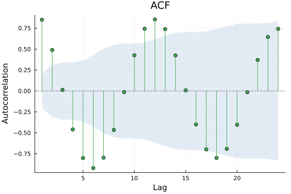
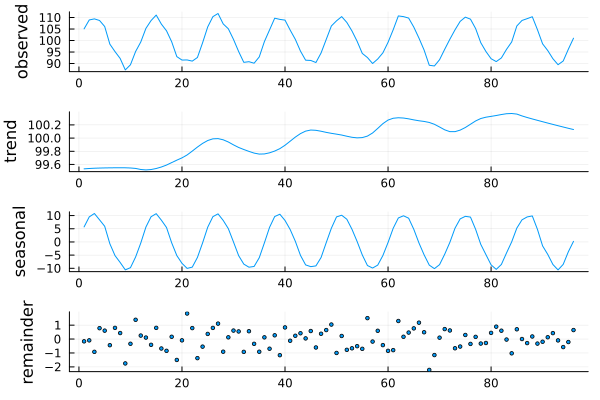
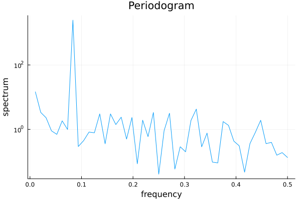
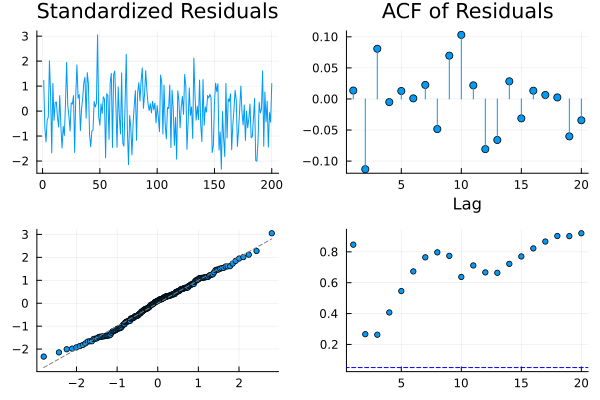
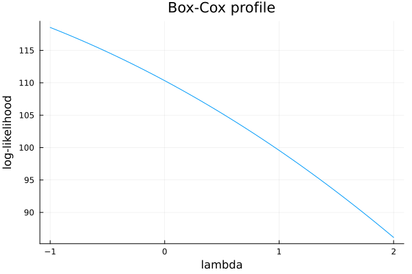

Plotting
TSAnalytics defines RecipesBase.jl recipes for its result types, so plot(result) works with any Plots.jl-compatible backend — without TSAnalytics itself taking on a Plots.jl/Makie.jl dependency (see ACFResult and the recipe list in the API reference).
The @example blocks below are real, executable code — Documenter runs them at build time and embeds the actual generated images, the same as any other Julia package's plotting examples. The session that first wrote them hit a local environment problem unrelated to TSAnalytics (a broken Qt6/GR dependency on that machine) that made it impossible to render and eyeball them there first. They render for real on CI (Ubuntu) — if that build ever fails on one of these blocks, fix the code here, don't just delete the warning.
Autocorrelation
using TSAnalytics, Plots, Random
Random.seed!(1)
y = 100 .+ 10 .* sin.(2π .* (1:96) ./ 12) .+ randn(96)
plot(acf(y, collect(1:24)); title="ACF")
pacf(...) results plot identically – both return an ACFResult, tagged by kind (:acf or :pacf), which the recipe uses for the axis label.
Decomposition
plot works the same way on any of ClassicalDecomposition, STLDecomposition, and MSTLDecomposition — a stacked observed/trend/seasonal/remainder display.
plot(stl_decompose(y, 12))
Spectral density
periodogram/spectral_density return a PeriodogramResult, with its own recipe (log-scale y-axis, the conventional display given a spectrum's large dynamic range). Series with more than 10,000 plotted points are decimated for display via local-maximum retention, which always preserves the true spectral peak exactly.
plot(periodogram(y))
Residual diagnostics
diagnostic_plot produces the standard 4-panel residual display (standardized residuals, ACF, Q-Q plot, Ljung-Box p-values across lags) — see Was It Any Good? for the underlying data this renders.
resid = randn(MersenneTwister(2), 200)
plot(diagnostic_plot(resid))
Box-Cox profile likelihood
The classic by-eye Box-Cox lambda selection view — boxcox_profile_plot returns a plain (lambdas, loglik) pair, plotted directly:
x = abs.(randn(MersenneTwister(3), 200)) .+ 5.0
profile = boxcox_profile_plot(x)
plot(profile.lambdas, profile.loglik; xlabel="lambda", ylabel="log-likelihood", legend=false, title="Box-Cox profile")
Seasonal subseries plot
fpp3's own signature "subseries plot" — seasonal_subseries_plot returns values/position/cycle/means; group values by position into one panel or line per position, each with a horizontal reference line at its own means[p].